Appendix - Climate Departure
gpkg_cd <- "data/gis/cd_peace.gpkg"
aoi <- sf::st_read(gpkg_cd, layer = "aoi", quiet = TRUE)
ecoregions <- sf::st_read(gpkg_cd, layer = "ecoregions", quiet = TRUE)
ecoregions <- ecoregions[ecoregions$area_km2 > 100, ]
ecoregions$name_tc <- tools::toTitleCase(tolower(ecoregions$name))
towns <- sf::st_read(gpkg_cd, layer = "towns", quiet = TRUE)
lakes <- sf::st_read(gpkg_cd, layer = "lakes", quiet = TRUE)
rivers <- sf::st_read(gpkg_cd, layer = "rivers", quiet = TRUE)
streams <- sf::st_read(gpkg_cd, layer = "streams", quiet = TRUE)
highways <- sf::st_read(gpkg_cd, layer = "highways", quiet = TRUE)
wsgs <- sf::st_read(gpkg_cd, layer = "wsgs", quiet = TRUE)
cd_data <- readRDS("data/gis/cd_peace.rds")
ts <- cd_data$regional$ts
bl_early <- cd_data$regional$bl
ano <- cd_data$regional$ano
trn <- cd_data$regional$trn
cmp <- cd_data$regional$cmp
cmp_pct <- cd_data$regional$cmp_pct
departure <- terra::rast("data/gis/cd_peace_departure_tmean.tif")
names(departure) <- "Temperature departure"
aoi_km2 <- as.numeric(sum(sf::st_area(sf::st_transform(aoi, 3005)))) / 1e6
aoi_bb <- sf::st_bbox(aoi)Climate departure and fish passage
Stream crossings are the visible structures in a fish-passage inventory: culverts, bridges, weirs, fords. The streams they cross sit inside a climate that is changing — warmer air, shifting snowpack, longer shoulder seasons — and those climate changes set the hydrologic and thermal context the structures pass fish through. A culvert that worked when it was installed in 1985 is now passing a different hydrograph: earlier freshet, lower late-summer flows, warmer water. The barrier inventory does not see that on its own.
Warmer air drives warmer streams. For the cold-water salmonids the Peace supports — bull trout, Arctic grayling, mountain whitefish — that can move habitat in either direction: cold-limited headwaters gain growing-degree-days (larger fish, better overwinter survival, stronger out-migration), while reaches near the upper edge of the thermal niche lose usable habitat. The recovery value of removing a downstream barrier scales with which side of that line each upstream reach sits on. Climate departure tells you which side that is, watershed by watershed.
Beyond temperature, hydrologic timing matters. Earlier and faster snowmelt shifts the freshet weeks earlier in the calendar and compresses the high-flow pulse. That changes design assumptions for crossing structures, and it changes the timing of migration, gravel mobilisation, and off-channel rearing — the in-stream processes barrier removal is meant to restore.
Quantifying departure at the watershed scale lets us carry climate context into barrier prioritisation alongside the structural and biological inputs.
Area of interest
The FWCP Peace Region is a 72,811 km² administrative boundary in northeastern British Columbia covering Williston Reservoir and surrounding watersheds. All watersheds drain to the Mackenzie River — the Peace flows east into the Slave, which flows into the Mackenzie, which empties into the Beaufort Sea on the Arctic Ocean. The region spans 5 ecoregions (Figure 5.11) — broad climate-physiography zones based on latitude, elevation, and dominant vegetation — and we carry that ecoregion partition through the analysis because climate departure can vary across them in ways the regional average hides.
ggplot() +
geom_sf(data = ecoregions, aes(fill = name_tc), color = "grey45",
linewidth = 0.3, alpha = 0.45) +
geom_sf(data = aoi, fill = NA, color = "#2166ac", linewidth = 0.8) +
geom_sf(data = lakes, fill = "#a6bddb", color = "#74a9cf", linewidth = 0.2) +
geom_sf(data = rivers, fill = "#a6bddb", color = "#74a9cf", linewidth = 0.2) +
geom_sf(data = streams, color = "#74a9cf", linewidth = 0.3, alpha = 0.6) +
geom_sf(data = highways, color = "#9c9c9c", linewidth = 0.75) +
geom_sf(data = highways, color = "#ffe585", linewidth = 0.5) +
geom_sf(data = towns, color = "black", size = 2.5) +
ggrepel::geom_label_repel(
data = towns, aes(label = name, geometry = geom),
stat = "sf_coordinates", size = 3.2, fill = "white", alpha = 0.85,
label.padding = unit(0.2, "lines"), min.segment.length = 0
) +
scale_fill_brewer(palette = "Set3", name = "Ecoregion") +
guides(fill = guide_legend(nrow = 2, byrow = TRUE)) +
coord_sf(xlim = c(aoi_bb["xmin"] - 0.4, aoi_bb["xmax"] + 0.4),
ylim = c(aoi_bb["ymin"] - 0.5, aoi_bb["ymax"] + 0.3)) +
labs(title = "FWCP Peace Region",
subtitle = paste0(format(round(aoi_km2), big.mark = ","),
" km² — ", nrow(ecoregions), " ecoregions")) +
theme_minimal(base_size = 11) +
theme(axis.title = element_blank(),
legend.position = "bottom",
legend.text = element_text(size = 8),
legend.title = element_text(size = 9),
legend.key.size = unit(0.4, "cm"))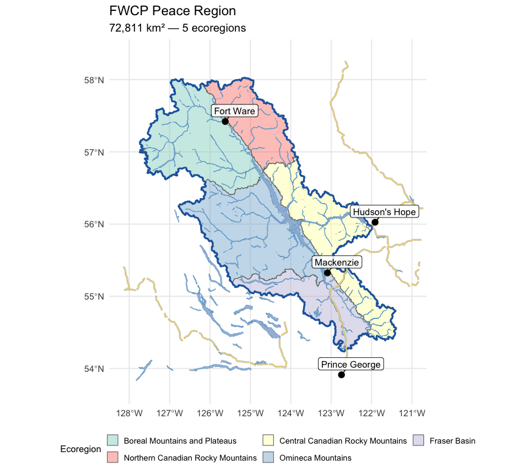
Figure 5.11: FWCP Peace Region area of interest in northeastern British Columbia, coloured by ecoregion. Williston Reservoir dominates the basin; the climate-departure pipeline is run on the regional outline (heavy blue) and again on each ecoregion polygon.
Recent decade versus pre-warming reference
The table below compares two windows directly — the recent decade (2015–2025) against the pre-warming reference (1951–1980). The difference is reported in the variable’s native units, alongside percent change where it is meaningful (precipitation, soil moisture, vapour pressure deficit, relative humidity). Two p-values appear, answering different questions. Δ p (windows) is the Welch t-test on the annual values within each window — this tells us if the recent decade differs from the pre-warming reference. Trend p (75-yr) is the Mann-Kendall test on the full 1951–present series — this tells us if there is a steady year-on-year ramp. Step changes show up as significant Δ p with non-significant trend p; gradual ramps show up as both significant.
trn_p <- trn[trn$trend_start == 1951, c("variable", "period", "mk_pvalue")]
names(trn_p)[3] <- "trend_p"
trn_p$trend_p <- round(trn_p$trend_p, 3)
no_pct_vars <- c("tmean", "tmax", "tmin",
"snow_cover", "snowfall_fraction", "snowmelt_doy_50")
cmp_combined <- cmp
cmp_combined$pct_change <- ifelse(
cmp_combined$variable %in% no_pct_vars,
NA_real_,
round(100 * (cmp_combined$mean_a - cmp_combined$mean_b) / cmp_combined$mean_b, 1)
)
cmp_combined$mean_a <- round(cmp_combined$mean_a, 2)
cmp_combined$mean_b <- round(cmp_combined$mean_b, 2)
cmp_combined$abs_diff <- round(cmp_combined$difference, 2)
cmp_live <- cd::cd_compare(ts)
cmp_combined$window_p <- round(
cmp_live$p_value[match(paste(cmp_combined$variable, cmp_combined$period),
paste(cmp_live$variable, cmp_live$period))], 3)
cmp_combined <- cmp_combined[, c("variable", "period", "mean_a", "mean_b",
"abs_diff", "pct_change", "window_p")]
cmp_combined <- merge(cmp_combined, trn_p,
by = c("variable", "period"), all.x = TRUE)
cmp_combined <- cmp_combined[order(cmp_combined$variable, cmp_combined$period), ]
names(cmp_combined) <- c("Variable", "Period",
"Recent (2015–2025)", "Pre-warming (1951–1980)",
"Δ absolute", "Δ %",
"Δ p (windows)", "Trend p (75-yr)")
kableExtra::kable_styling(
knitr::kable(cmp_combined, label = NA, row.names = FALSE,
caption = "Recent decade (2015-2025) versus pre-warming reference (1951-1980) for all 15 climate variables and all available periods, FWCP Peace Region. Two p-values answer different questions — see text."),
bootstrap_options = c("striped", "hover", "condensed")
) |>
kableExtra::scroll_box(height = "420px")| Variable | Period | Recent (2015–2025) | Pre-warming (1951–1980) | Δ absolute | Δ % | Δ p (windows) | Trend p (75-yr) |
|---|---|---|---|---|---|---|---|
| prcp | annual | 835.20 | 803.11 | 32.08 | 4.0 | 0.308 | 0.197 |
| prcp | fall | 239.18 | 230.76 | 8.42 | 3.7 | 0.622 | 0.493 |
| prcp | spring | 155.72 | 150.62 | 5.10 | 3.4 | 0.643 | 0.164 |
| prcp | summer | 266.04 | 242.15 | 23.89 | 9.9 | 0.283 | 0.185 |
| prcp | winter | 174.26 | 179.59 | -5.33 | -3.0 | 0.674 | 0.661 |
| rh | annual | 74.08 | 74.08 | 0.00 | 0.0 | 0.992 | 0.862 |
| rh | fall | 79.38 | 80.16 | -0.78 | -1.0 | 0.279 | 0.091 |
| rh | spring | 68.43 | 69.49 | -1.06 | -1.5 | 0.159 | 0.385 |
| rh | summer | 67.25 | 67.63 | -0.38 | -0.6 | 0.760 | 0.756 |
| rh | winter | 81.25 | 79.05 | 2.20 | 2.8 | 0.004 | 0.003 |
| snow_cover | annual | 59.89 | 63.84 | -3.95 | – | 0.001 | 0.003 |
| snow_cover | fall | 49.76 | 52.03 | -2.27 | – | 0.424 | 0.405 |
| snow_cover | spring | 88.85 | 93.80 | -4.95 | – | 0.004 | 0.001 |
| snow_cover | summer | 4.22 | 12.80 | -8.58 | – | 0.000 | 0.001 |
| snow_cover | winter | 96.73 | 96.71 | 0.02 | – | 0.238 | 0.282 |
| snowfall | annual | 405.53 | 432.37 | -26.84 | -6.2 | 0.089 | 0.253 |
| snowfall | fall | 136.62 | 135.00 | 1.61 | 1.2 | 0.895 | 0.934 |
| snowfall | spring | 94.08 | 109.02 | -14.94 | -13.7 | 0.074 | 0.459 |
| snowfall | summer | 4.87 | 12.02 | -7.15 | -59.5 | 0.002 | 0.002 |
| snowfall | winter | 169.96 | 176.32 | -6.36 | -3.6 | 0.619 | 0.708 |
| snowfall_fraction | annual | 48.45 | 53.56 | -5.10 | – | 0.005 | 0.008 |
| snowmelt | annual | 381.07 | 409.27 | -28.20 | -6.9 | 0.139 | 0.528 |
| snowmelt | fall | 25.92 | 30.93 | -5.02 | -16.2 | 0.214 | 0.421 |
| snowmelt | spring | 289.89 | 212.24 | 77.65 | 36.6 | 0.002 | 0.001 |
| snowmelt | summer | 63.82 | 165.05 | -101.23 | -61.3 | 0.001 | 0.007 |
| snowmelt | winter | 1.44 | 1.05 | 0.39 | 37.2 | 0.599 | 0.599 |
| snowmelt_doy_50 | annual | 137.74 | 148.50 | -10.75 | – | 0.000 | 0.002 |
| snowmelt_rate_peak | annual | 118.44 | 116.52 | 1.93 | 1.7 | 0.805 | 0.385 |
| soil_moisture | annual | 0.32 | 0.32 | 0.00 | -0.3 | 0.749 | 0.898 |
| soil_moisture | fall | 0.32 | 0.32 | 0.00 | -0.4 | 0.821 | 0.996 |
| soil_moisture | spring | 0.32 | 0.32 | 0.01 | 1.9 | 0.029 | 0.015 |
| soil_moisture | summer | 0.33 | 0.33 | -0.01 | -2.5 | 0.132 | 0.173 |
| soil_moisture | winter | 0.31 | 0.31 | 0.00 | -0.2 | 0.819 | 0.498 |
| swe | annual | 121.65 | 135.11 | -13.46 | -10.0 | 0.104 | 0.264 |
| swe | fall | 29.15 | 30.24 | -1.09 | -3.6 | 0.751 | 0.985 |
| swe | spring | 259.56 | 292.80 | -33.24 | -11.4 | 0.100 | 0.272 |
| swe | summer | 5.27 | 21.50 | -16.23 | -75.5 | 0.000 | 0.003 |
| swe | winter | 192.64 | 195.91 | -3.27 | -1.7 | 0.754 | 0.913 |
| swe_max | annual | 333.64 | 348.42 | -14.79 | -4.2 | 0.433 | 0.770 |
| tmax | annual | 3.66 | 1.99 | 1.67 | – | 0.000 | 0.000 |
| tmax | fall | 3.49 | 2.55 | 0.93 | – | 0.039 | 0.066 |
| tmax | spring | 3.93 | 2.16 | 1.76 | – | 0.000 | 0.001 |
| tmax | summer | 16.62 | 15.00 | 1.62 | – | 0.001 | 0.000 |
| tmax | winter | -9.40 | -11.77 | 2.37 | – | 0.001 | 0.000 |
| tmean | annual | -0.59 | -2.41 | 1.82 | – | 0.000 | 0.000 |
| tmean | fall | -0.32 | -1.58 | 1.26 | – | 0.005 | 0.010 |
| tmean | spring | -0.75 | -2.57 | 1.82 | – | 0.000 | 0.000 |
| tmean | summer | 11.64 | 9.76 | 1.88 | – | 0.000 | 0.000 |
| tmean | winter | -12.92 | -15.27 | 2.34 | – | 0.003 | 0.000 |
| tmin | annual | -4.12 | -6.05 | 1.93 | – | 0.000 | 0.000 |
| tmin | fall | -3.19 | -4.71 | 1.52 | – | 0.001 | 0.003 |
| tmin | spring | -4.76 | -6.49 | 1.74 | – | 0.000 | 0.000 |
| tmin | summer | 6.93 | 4.81 | 2.12 | – | 0.000 | 0.000 |
| tmin | winter | -15.47 | -17.81 | 2.33 | – | 0.004 | 0.000 |
| vpd | annual | 2.14 | 1.86 | 0.28 | 15.1 | 0.002 | 0.001 |
| vpd | fall | 1.48 | 1.32 | 0.16 | 12.3 | 0.065 | 0.032 |
| vpd | spring | 2.05 | 1.67 | 0.38 | 22.8 | 0.000 | 0.000 |
| vpd | summer | 4.62 | 4.06 | 0.55 | 13.6 | 0.045 | 0.034 |
| vpd | winter | 0.43 | 0.40 | 0.03 | 6.5 | 0.023 | 0.001 |
The recent decade ran 1.8 °C warmer than the pre-warming reference for annual mean temperature, with both window and trend p-values below 0.001. Vapour pressure deficit rose significantly on both tests. Annual precipitation rose about 4 % but neither test confirms the shift. Soil moisture and relative humidity show no meaningful change. The snow rows (swe summer, snowmelt spring, snowmelt_doy_50) carry the headline snowpack-timing signals discussed below.
Trends over the long record
Anomalies are computed against the 1951–1980 pre-warming reference. Saying a year is “+1.5 °C” means it was 1.5 °C warmer than the average year between 1951 and 1980. The trend table below has two rows per variable — trends computed from two different start years:
- 1951–present (75 years) — the long view. Captures the full magnitude of warming since the pre-warming reference.
- 1981–present (45 years) — starts at the beginning of the current 30-year climate normal (1981–2010), the reference used in most published climate products.
Comparing the two slopes is informative. If the 45-year slope is steeper than the 75-year slope, warming has accelerated; if shallower, warming has slowed (though “slower” almost never means “stopped”). Similar slopes mean a roughly steady rate of change across the full record. Total change is slope multiplied by the number of years — the cumulative shift over the trend window.
kableExtra::kable_styling(
knitr::kable(cd::cd_summary(trn), label = NA,
caption = "Trend statistics for all variables and periods, FWCP Peace Region — Theil-Sen slope, Mann-Kendall p-value, and cumulative change over each trend window."),
bootstrap_options = c("striped", "hover", "condensed")
) |>
kableExtra::scroll_box(height = "320px")| Parameter | Period | Slope | Years | Total Change | Unit | p-value |
|---|---|---|---|---|---|---|
| Precipitation | Annual | 0.085 | 75 | 6.4 | % | 0.1971 |
| Relative humidity | Annual | 0.001 | 75 | 0.1 | % | 0.8620 |
| Snow cover | Annual | -0.053 | 75 | -4.0 | % | 0.0026 |
| Snowfall | Annual | -0.088 | 75 | -6.6 | % | 0.2528 |
| Snowfall fraction | Annual | -0.079 | 75 | -5.9 | % | 0.0078 |
| Snowmelt | Annual | -0.039 | 75 | -2.9 | % | 0.5279 |
| Day of 50% melt | Annual | -0.150 | 75 | -11.3 | day | 0.0018 |
| Peak weekly melt rate | Annual | 0.101 | 75 | 7.6 | mm/wk | 0.3848 |
| Soil moisture | Annual | -0.002 | 75 | -0.1 | % | 0.8981 |
| Snow water equivalent | Annual | -0.098 | 75 | -7.3 | % | 0.2644 |
| Annual peak snow water equivalent | Annual | -0.075 | 75 | -5.7 | mm | 0.7697 |
| Maximum temperature | Annual | 0.027 | 75 | 2.0 | °C | 0.0000 |
| Mean temperature | Annual | 0.030 | 75 | 2.2 | °C | 0.0000 |
| Minimum temperature | Annual | 0.032 | 75 | 2.4 | °C | 0.0000 |
| Vapour pressure deficit | Annual | 0.005 | 75 | 0.3 | Pa | 0.0008 |
| Precipitation | Fall | 0.065 | 75 | 4.9 | % | 0.4926 |
| Relative humidity | Fall | -0.016 | 75 | -1.2 | % | 0.0906 |
| Snow cover | Fall | -0.032 | 75 | -2.4 | % | 0.4051 |
| Snowfall | Fall | 0.019 | 75 | 1.4 | % | 0.9344 |
| Snowmelt | Fall | -0.149 | 75 | -11.2 | % | 0.4208 |
| Soil moisture | Fall | 0.000 | 75 | 0.0 | % | 0.9964 |
| Snow water equivalent | Fall | 0.006 | 75 | 0.4 | % | 0.9854 |
| Maximum temperature | Fall | 0.013 | 75 | 1.0 | °C | 0.0659 |
| Mean temperature | Fall | 0.020 | 75 | 1.5 | °C | 0.0099 |
| Minimum temperature | Fall | 0.025 | 75 | 1.9 | °C | 0.0027 |
| Vapour pressure deficit | Fall | 0.002 | 75 | 0.2 | Pa | 0.0323 |
| Precipitation | Spring | 0.184 | 75 | 13.8 | % | 0.1644 |
| Relative humidity | Spring | -0.009 | 75 | -0.7 | % | 0.3848 |
| Snow cover | Spring | -0.047 | 75 | -3.5 | % | 0.0014 |
| Snowfall | Spring | -0.102 | 75 | -7.6 | % | 0.4587 |
| Snowmelt | Spring | 0.559 | 75 | 41.9 | % | 0.0006 |
| Soil moisture | Spring | 0.032 | 75 | 2.4 | % | 0.0151 |
| Snow water equivalent | Spring | -0.119 | 75 | -8.9 | % | 0.2723 |
| Maximum temperature | Spring | 0.025 | 75 | 1.9 | °C | 0.0007 |
| Mean temperature | Spring | 0.028 | 75 | 2.1 | °C | 0.0001 |
| Minimum temperature | Spring | 0.027 | 75 | 2.0 | °C | 0.0001 |
| Vapour pressure deficit | Spring | 0.005 | 75 | 0.4 | Pa | 0.0001 |
| Precipitation | Summer | 0.175 | 75 | 13.1 | % | 0.1847 |
| Relative humidity | Summer | -0.007 | 75 | -0.6 | % | 0.7558 |
| Snow cover | Summer | -0.121 | 75 | -9.1 | % | 0.0008 |
| Snowfall | Summer | -0.735 | 75 | -55.1 | % | 0.0015 |
| Snowmelt | Summer | -0.807 | 75 | -60.5 | % | 0.0066 |
| Soil moisture | Summer | -0.036 | 75 | -2.7 | % | 0.1728 |
| Snow water equivalent | Summer | -0.792 | 75 | -59.4 | % | 0.0029 |
| Maximum temperature | Summer | 0.026 | 75 | 2.0 | °C | 0.0004 |
| Mean temperature | Summer | 0.031 | 75 | 2.4 | °C | 0.0000 |
| Minimum temperature | Summer | 0.035 | 75 | 2.6 | °C | 0.0000 |
| Vapour pressure deficit | Summer | 0.009 | 75 | 0.7 | Pa | 0.0338 |
| Precipitation | Winter | -0.050 | 75 | -3.8 | % | 0.6606 |
| Relative humidity | Winter | 0.035 | 75 | 2.7 | % | 0.0026 |
| Snow cover | Winter | 0.000 | 75 | 0.0 | % | 0.2816 |
| Snowfall | Winter | -0.044 | 75 | -3.3 | % | 0.7076 |
| Snowmelt | Winter | 0.056 | 75 | 4.2 | % | 0.5987 |
| Soil moisture | Winter | -0.005 | 75 | -0.4 | % | 0.4983 |
| Snow water equivalent | Winter | 0.009 | 75 | 0.7 | % | 0.9126 |
| Maximum temperature | Winter | 0.045 | 75 | 3.4 | °C | 0.0000 |
| Mean temperature | Winter | 0.044 | 75 | 3.3 | °C | 0.0002 |
| Minimum temperature | Winter | 0.043 | 75 | 3.3 | °C | 0.0003 |
| Vapour pressure deficit | Winter | 0.001 | 75 | 0.1 | Pa | 0.0007 |
| Precipitation | Annual | -0.010 | 45 | -0.4 | % | 0.9298 |
| Relative humidity | Annual | -0.016 | 45 | -0.7 | % | 0.3947 |
| Snow cover | Annual | -0.063 | 45 | -2.8 | % | 0.0516 |
| Snowfall | Annual | -0.073 | 45 | -3.3 | % | 0.6317 |
| Snowfall fraction | Annual | -0.003 | 45 | -0.1 | % | 0.9143 |
| Snowmelt | Annual | -0.107 | 45 | -4.8 | % | 0.3947 |
| Day of 50% melt | Annual | -0.119 | 45 | -5.4 | day | 0.2141 |
| Peak weekly melt rate | Annual | 0.090 | 45 | 4.1 | mm/wk | 0.6598 |
| Soil moisture | Annual | -0.017 | 45 | -0.7 | % | 0.6041 |
| Snow water equivalent | Annual | -0.116 | 45 | -5.2 | % | 0.6598 |
| Annual peak snow water equivalent | Annual | -0.251 | 45 | -11.3 | mm | 0.6884 |
| Maximum temperature | Annual | 0.021 | 45 | 0.9 | °C | 0.0449 |
| Mean temperature | Annual | 0.023 | 45 | 1.0 | °C | 0.0264 |
| Minimum temperature | Annual | 0.024 | 45 | 1.1 | °C | 0.0116 |
| Vapour pressure deficit | Annual | 0.005 | 45 | 0.2 | Pa | 0.0963 |
| Precipitation | Fall | 0.083 | 45 | 3.7 | % | 0.6884 |
| Relative humidity | Fall | -0.022 | 45 | -1.0 | % | 0.1678 |
| Snow cover | Fall | -0.078 | 45 | -3.5 | % | 0.3630 |
| Snowfall | Fall | -0.046 | 45 | -2.1 | % | 0.7767 |
| Snowmelt | Fall | 0.177 | 45 | 8.0 | % | 0.6740 |
| Soil moisture | Fall | -0.003 | 45 | -0.2 | % | 0.9376 |
| Snow water equivalent | Fall | -0.443 | 45 | -19.9 | % | 0.3328 |
| Maximum temperature | Fall | 0.029 | 45 | 1.3 | °C | 0.0338 |
| Mean temperature | Fall | 0.038 | 45 | 1.7 | °C | 0.0053 |
| Minimum temperature | Fall | 0.046 | 45 | 2.1 | °C | 0.0014 |
| Vapour pressure deficit | Fall | 0.005 | 45 | 0.2 | Pa | 0.0834 |
| Precipitation | Spring | -0.231 | 45 | -10.4 | % | 0.3044 |
| Relative humidity | Spring | -0.054 | 45 | -2.4 | % | 0.0227 |
| Snow cover | Spring | -0.047 | 45 | -2.1 | % | 0.2444 |
| Snowfall | Spring | -0.267 | 45 | -12.0 | % | 0.4631 |
| Snowmelt | Spring | 0.550 | 45 | 24.7 | % | 0.0944 |
| Soil moisture | Spring | -0.010 | 45 | -0.5 | % | 0.7100 |
| Snow water equivalent | Spring | -0.127 | 45 | -5.7 | % | 0.6041 |
| Maximum temperature | Spring | 0.011 | 45 | 0.5 | °C | 0.6179 |
| Mean temperature | Spring | 0.006 | 45 | 0.3 | °C | 0.7468 |
| Minimum temperature | Spring | 0.003 | 45 | 0.1 | °C | 0.7917 |
| Vapour pressure deficit | Spring | 0.008 | 45 | 0.4 | Pa | 0.0141 |
| Precipitation | Summer | -0.121 | 45 | -5.4 | % | 0.7468 |
| Relative humidity | Summer | 0.001 | 45 | 0.0 | % | 0.9922 |
| Snow cover | Summer | -0.118 | 45 | -5.3 | % | 0.0766 |
| Snowfall | Summer | -0.544 | 45 | -24.5 | % | 0.1295 |
| Snowmelt | Summer | -0.822 | 45 | -37.0 | % | 0.0944 |
| Soil moisture | Summer | -0.069 | 45 | -3.1 | % | 0.2952 |
| Snow water equivalent | Summer | -0.659 | 45 | -29.7 | % | 0.0799 |
| Maximum temperature | Summer | 0.030 | 45 | 1.3 | °C | 0.0617 |
| Mean temperature | Summer | 0.034 | 45 | 1.5 | °C | 0.0113 |
| Minimum temperature | Summer | 0.036 | 45 | 1.6 | °C | 0.0015 |
| Vapour pressure deficit | Summer | 0.009 | 45 | 0.4 | Pa | 0.4057 |
| Precipitation | Winter | 0.187 | 45 | 8.4 | % | 0.4281 |
| Relative humidity | Winter | 0.021 | 45 | 1.0 | % | 0.3527 |
| Snow cover | Winter | 0.000 | 45 | 0.0 | % | 0.3945 |
| Snowfall | Winter | 0.145 | 45 | 6.5 | % | 0.4631 |
| Snowmelt | Winter | 0.419 | 45 | 18.9 | % | 0.3376 |
| Soil moisture | Winter | -0.003 | 45 | -0.1 | % | 0.8911 |
| Snow water equivalent | Winter | 0.068 | 45 | 3.1 | % | 0.8220 |
| Maximum temperature | Winter | 0.015 | 45 | 0.7 | °C | 0.4752 |
| Mean temperature | Winter | 0.007 | 45 | 0.3 | °C | 0.7321 |
| Minimum temperature | Winter | 0.005 | 45 | 0.2 | °C | 0.7917 |
| Vapour pressure deficit | Winter | 0.000 | 45 | 0.0 | Pa | 0.8220 |
cd::cd_plot_timeseries(
ano, variable = "tmean", period = "annual", trend = trn,
title = "Annual Mean Temperature Anomaly — FWCP Peace Region"
)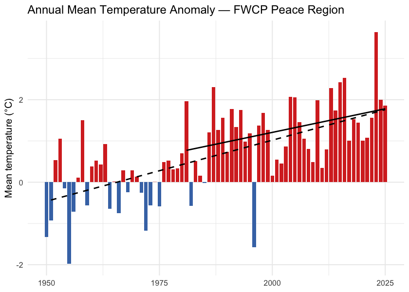
Figure 5.12: Annual mean temperature anomaly for the FWCP Peace Region relative to the 1951-1980 baseline. Bars are degrees above (red) or below (blue) the pre-warming average; the two trend lines are the 75-year (1951-present, dashed) and 45-year (1981-present, solid) Theil-Sen slopes.
cd::cd_plot_timeseries(
ano, variable = "prcp", period = "annual", trend = trn,
title = "Annual Precipitation Anomaly — FWCP Peace Region"
)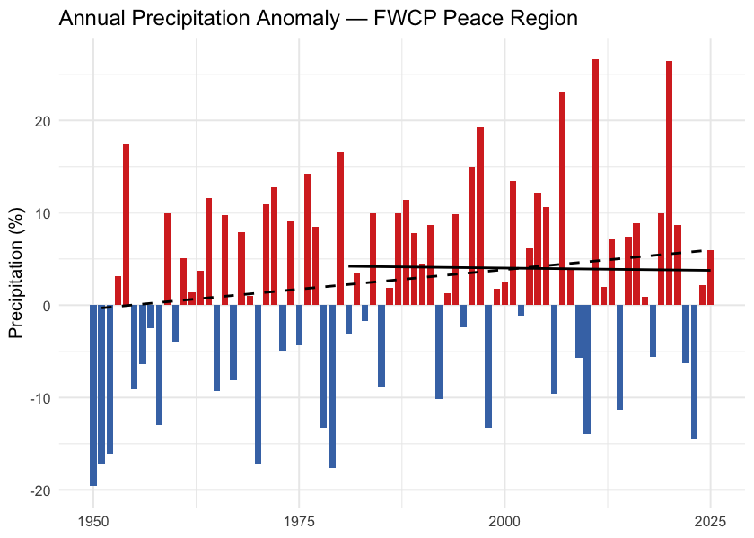
Figure 5.13: Annual precipitation anomaly (% of the 1951-1980 baseline) for the FWCP Peace Region. The long-term trend is positive but not statistically significant at the regional scale; significance does appear in the two northernmost ecoregions (see Per-Ecoregion section).
Daytime highs and overnight lows
The cd package ships daytime maximum (tmax) and overnight minimum
(tmin) temperatures alongside the daily mean. They carry distinct
information. Overnight minimums warming faster than daytime
maximums — the “day-night asymmetry” — is one of the textbook
fingerprints of greenhouse warming. Karl et al. (1993)
documented this first at the global scale, finding overnight
minimums rose at roughly three times the rate of daytime maximums
between 1951 and 1990.
For the FWCP Peace Region, overnight minimums are warming faster than daytime maximums. Daytime maximums warmed about +0.027 °C per year since 1951 (+2.0 °C cumulative); overnight minimums warmed about +0.032 °C per year (+2.4 °C cumulative). The overnight side warmed roughly 0.4 °C more than the daytime side over the full record, narrowing the diurnal temperature range by the same amount (Figure 5.16).
trn_tmax <- cd::cd_trend(
ano[ano$variable == "tmax" & ano$period == "annual", ],
trend_start = c(1951, 1981)
)
cd::cd_plot_timeseries(ano, variable = "tmax", period = "annual", trend = trn_tmax,
title = "Daytime Maximum (tmax) — Annual Anomaly")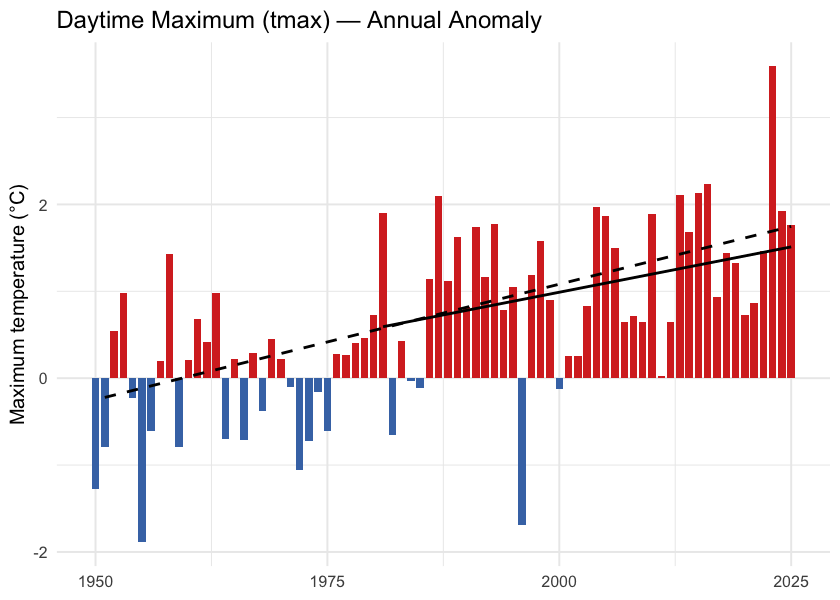
Figure 5.14: Annual daytime maximum temperature (tmax) anomaly relative to the 1951-1980 baseline.
trn_tmin <- cd::cd_trend(
ano[ano$variable == "tmin" & ano$period == "annual", ],
trend_start = c(1951, 1981)
)
cd::cd_plot_timeseries(ano, variable = "tmin", period = "annual", trend = trn_tmin,
title = "Overnight Minimum (tmin) — Annual Anomaly")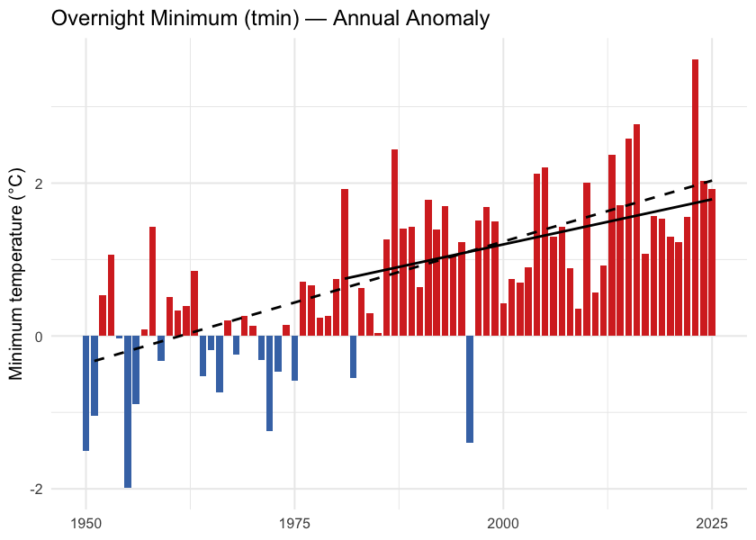
Figure 5.15: Annual overnight minimum temperature (tmin) anomaly relative to the 1951-1980 baseline.
tmax_ts <- ts[ts$variable == "tmax" & ts$period == "annual", c("year", "value")]
tmin_ts <- ts[ts$variable == "tmin" & ts$period == "annual", c("year", "value")]
dtr <- merge(tmax_ts, tmin_ts, by = "year", suffixes = c("_max", "_min"))
dtr$dtr <- dtr$value_max - dtr$value_min
ggplot(dtr, aes(x = year, y = dtr)) +
geom_line(color = "grey50") +
geom_point(color = "grey30", size = 1) +
geom_smooth(method = "lm", se = FALSE, color = "#b2182b", linewidth = 0.8) +
labs(title = "Diurnal Temperature Range — FWCP Peace Region",
x = NULL,
y = expression("Daytime maximum minus overnight minimum (" * degree * "C)")) +
theme_minimal(base_size = 11)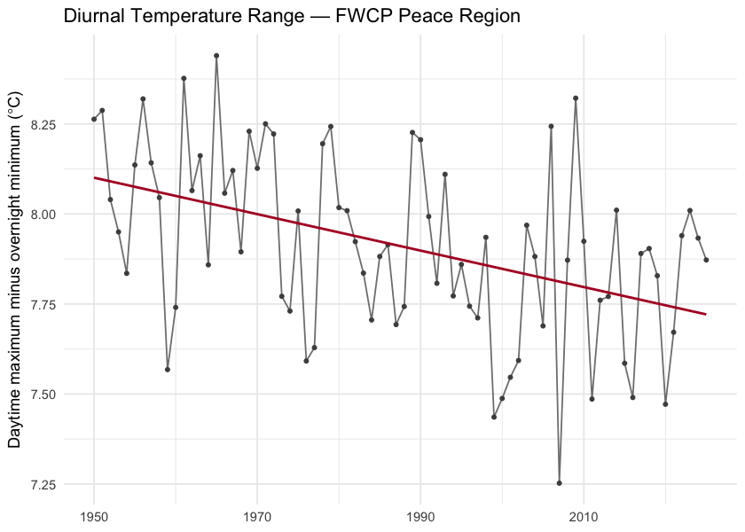
Figure 5.16: Diurnal temperature range (daytime maximum minus overnight minimum) annual mean for the FWCP Peace Region. The downward slope is the day-night asymmetry — overnight lows are warming faster than daytime highs.
Snowpack
Snowpack drives the seasonal water supply across British Columbia: winter precipitation falls as snow, accumulates on the ground, and releases as meltwater across spring and summer. That seasonal storage is the difference between a late-summer creek that still flows and one that does not. It also sets the timing of the spring freshet — the annual flood pulse that salmonids time their up-river migrations to.
For the FWCP Peace Region the snowpack signal is unambiguous and concentrated in the warm shoulders of the year. Annual snow water equivalent declined about 10 % (135 → 122 mm), but the seasonal breakdown is sharper: summer snow water equivalent collapsed by 75 % (21.5 → 5.3 mm) and spring snowmelt rose 37 % (212 → 290 mm) as the freshet shifted earlier in the calendar. Total annual snowfall barely changed (-6 %) — the snow water equivalent decline is mostly about warming removing snow earlier, not less snow falling.
Seasonal snowpack curve
Aggregated to the four standard meteorological seasons — winter (December–February), spring (March–May), summer (June–August), and fall (September–November) — the table below compares the recent decade (2015–2025) directly against the pre-warming reference (1951–1980) for each of the four monthly-native snow variables. The headline numbers (summer snow water equivalent collapse, spring snowmelt rise) are in the summer and spring rows.
snow_monthly <- c("swe", "snowfall", "snowmelt", "snow_cover")
season_order <- c("winter", "spring", "summer", "fall")
snow_seasonal <- cmp_pct[cmp_pct$variable %in% snow_monthly &
cmp_pct$period %in% season_order, ]
snow_seasonal$period <- factor(snow_seasonal$period, levels = season_order)
snow_seasonal$variable <- factor(snow_seasonal$variable, levels = snow_monthly,
labels = c("Snow water equivalent (mm)", "Snowfall (mm)",
"Snowmelt (mm)", "Snow cover (%)"))
snow_seasonal <- snow_seasonal[order(snow_seasonal$variable, snow_seasonal$period), ]
snow_seasonal$mean_a <- round(snow_seasonal$mean_a, 1)
snow_seasonal$mean_b <- round(snow_seasonal$mean_b, 1)
snow_seasonal$difference <- round(snow_seasonal$difference, 1)
snow_seasonal <- snow_seasonal[, c("variable", "period", "mean_b",
"mean_a", "difference")]
names(snow_seasonal) <- c("Variable", "Season",
"Pre-warming (1951–1980)",
"Recent (2015–2025)", "Δ %")
kableExtra::kable_styling(
knitr::kable(snow_seasonal, label = NA, row.names = FALSE,
caption = "Seasonal snowpack: recent decade versus pre-warming reference, FWCP Peace Region. Summer snow water equivalent collapse (-75 %) and spring snowmelt rise (+37 %) carry the headline signals."),
bootstrap_options = c("striped", "hover", "condensed")
)| Variable | Season | Pre-warming (1951–1980) | Recent (2015–2025) | Δ % |
|---|---|---|---|---|
| Snow water equivalent (mm) | winter | 195.9 | 192.6 | -1.7 |
| Snow water equivalent (mm) | spring | 292.8 | 259.6 | -11.4 |
| Snow water equivalent (mm) | summer | 21.5 | 5.3 | -75.5 |
| Snow water equivalent (mm) | fall | 30.2 | 29.1 | -3.6 |
| Snowfall (mm) | winter | 176.3 | 170.0 | -3.6 |
| Snowfall (mm) | spring | 109.0 | 94.1 | -13.7 |
| Snowfall (mm) | summer | 12.0 | 4.9 | -59.5 |
| Snowfall (mm) | fall | 135.0 | 136.6 | 1.2 |
| Snowmelt (mm) | winter | 1.1 | 1.4 | 37.2 |
| Snowmelt (mm) | spring | 212.2 | 289.9 | 36.6 |
| Snowmelt (mm) | summer | 165.0 | 63.8 | -61.3 |
| Snowmelt (mm) | fall | 30.9 | 25.9 | -16.2 |
Annual snowpack signals
Four derived annual scalars capture the snowpack signals the literature treats as headline metrics for snow hydrology: peak snowpack (Mote et al. 2018, 2005), the date of melt midpoint (Stewart et al. 2005; Cayan et al. 2001), freshet flashiness, and the fraction of precipitation falling as snow (Knowles et al. 2006).
trn_swe_max <- cd::cd_trend(
ano[ano$variable == "swe_max" & ano$period == "annual", ],
trend_start = c(1951, 1981)
)
cd::cd_plot_timeseries(ano, variable = "swe_max", period = "annual",
trend = trn_swe_max,
title = "Annual peak snow water equivalent — Anomaly")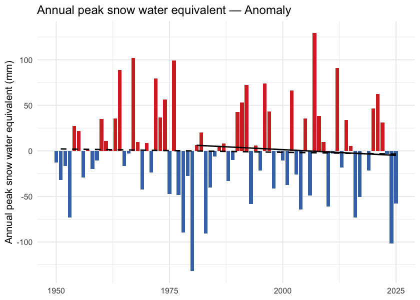
Figure 5.17: Annual peak snow water equivalent (swe_max) for the FWCP Peace Region. ERA5-Land mm snow water equivalent, regional spatial mean.
trn_doy <- cd::cd_trend(
ano[ano$variable == "snowmelt_doy_50" & ano$period == "annual", ],
trend_start = c(1951, 1981)
)
cd::cd_plot_timeseries(ano, variable = "snowmelt_doy_50", period = "annual",
trend = trn_doy,
title = "Snowmelt 50 % DOY — Anomaly")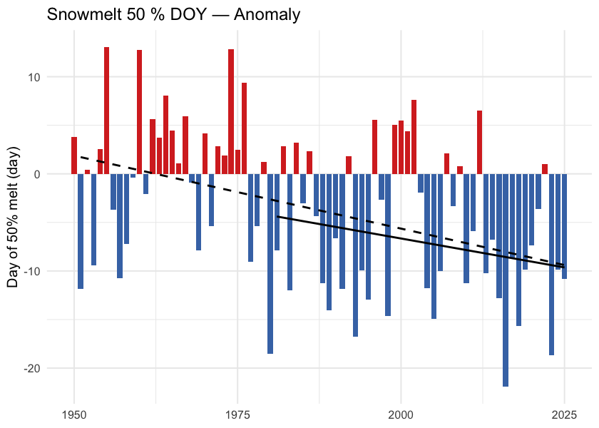
Figure 5.18: Day of year when half the annual snowmelt has accumulated (snowmelt_doy_50). Earlier dates indicate an earlier freshet centroid — directly relevant to crossing-design hydrology and to migration timing.
trn_rate <- cd::cd_trend(
ano[ano$variable == "snowmelt_rate_peak" & ano$period == "annual", ],
trend_start = c(1951, 1981)
)
cd::cd_plot_timeseries(ano, variable = "snowmelt_rate_peak", period = "annual",
trend = trn_rate,
title = "Peak weekly melt rate — Anomaly")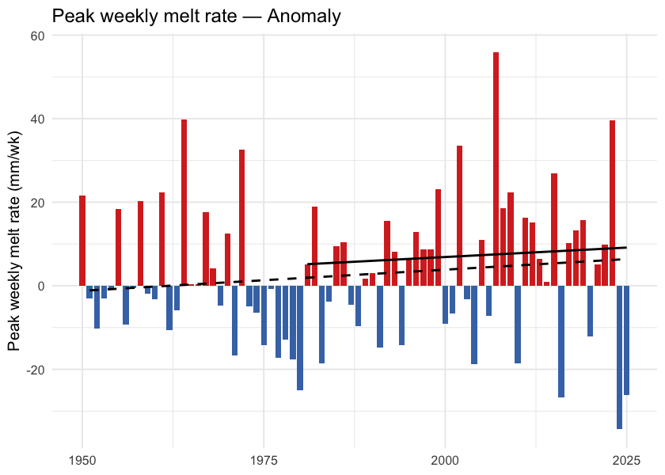
Figure 5.19: Annual maximum of 7-day rolling daily snowmelt (snowmelt_rate_peak). Higher values indicate more concentrated freshet pulses on the snowpack side, upstream of routing through soil and channel storage.
trn_frac <- cd::cd_trend(
ano[ano$variable == "snowfall_fraction" & ano$period == "annual", ],
trend_start = c(1951, 1981)
)
cd::cd_plot_timeseries(ano, variable = "snowfall_fraction", period = "annual",
trend = trn_frac,
title = "Snowfall fraction — Anomaly")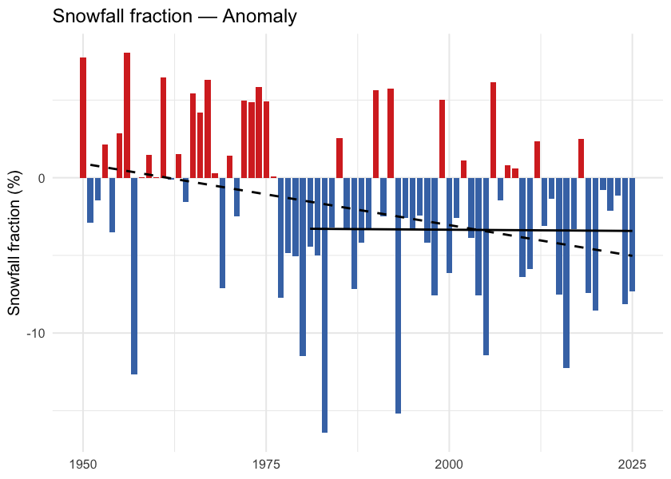
Figure 5.20: Annual snowfall fraction: the percent of annual precipitation that fell as snow. Anomaly is in percentage points relative to the 1951-1980 baseline.
What this means for the FWCP Peace Region
Snow is leaving the region earlier each year, not falling less. Total annual snowfall is roughly stable (-6 %); the snowpack decline is dominated by earlier melt, not by less snow. The seasonal data make this concrete: spring snowmelt is up 37 % while summer snowmelt is down 61 % — same total melt, redistributed earlier into the year. This matches the broader Pacific-Northwest signal documented since Mote et al. (2005).
The freshet is shifting into spring. Spring snowmelt up 37 % is direct evidence of an earlier freshet centroid — consistent in direction and rough magnitude with the 1–4 week earlier streamflow timing across western North America in Stewart et al. (2005), and with the 10-day Fraser freshet advance in Kang et al. (2016) for a basin whose southern boundary is just south of the Peace.
Summer is becoming snow-free. Summer snow water equivalent has collapsed by 75 % and summer snowmelt is down 61 %. The high-elevation snowpack that historically lingered into summer no longer does in the recent decade. For aquatic ecosystems downstream this is a loss of late-season cold-water input to streams during the warmest part of the year — the weeks where stream-temperature stress is highest for cold-water salmonids.
Spatial pattern of warming
The regional zonal mean reduces a region this size to a single number; the spatial pattern carries the rest of the story.
Warming is not spatially uniform. Total departures range from about +1.5 °C in the southeast to over +2.1 °C in the west and centre (Figure 5.21). The dominant gradient runs east-to-west — the western half of the region averages roughly 0.2 °C more warming than the eastern half — with a smaller south-to-north component. The west-of-Rockies pattern is consistent with windward-slope amplification along the Continental Divide (Pepin et al. 2015).
ggplot() +
geom_spatraster(data = departure) +
geom_sf(data = ecoregions, fill = NA, color = "grey25",
linewidth = 0.4, linetype = "dashed") +
geom_sf(data = aoi, fill = NA, color = "black", linewidth = 0.6) +
geom_sf(data = lakes, fill = NA, color = "grey40", linewidth = 0.2) +
geom_sf(data = highways, color = "#9c9c9c", linewidth = 0.6) +
geom_sf(data = highways, color = "#ffe585", linewidth = 0.4) +
geom_sf(data = towns, color = "black", size = 2) +
ggrepel::geom_label_repel(
data = towns, aes(label = name, geometry = geom),
stat = "sf_coordinates", size = 3, fill = "white", alpha = 0.8
) +
scale_fill_distiller(palette = "RdBu", direction = -1,
name = expression(Delta * degree * C)) +
coord_sf(xlim = c(aoi_bb["xmin"], aoi_bb["xmax"]),
ylim = c(aoi_bb["ymin"], aoi_bb["ymax"])) +
labs(title = "Temperature Departure (2015-2025 vs 1951-1980)") +
theme_minimal(base_size = 11) +
theme(axis.title = element_blank())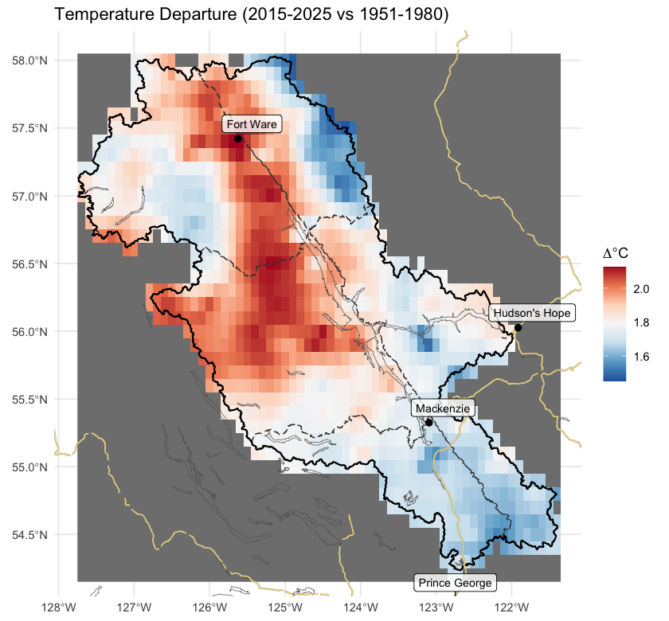
Figure 5.21: Spatial pattern of annual mean temperature departure across the FWCP Peace Region (2015-2025 mean minus 1951-1980 mean, degrees C). Warming is broad but uneven — the west-of-Rockies pattern is consistent with windward-slope amplification along the Continental Divide.
Per-ecoregion variation
The regional zonal mean averages over five ecoregions with different elevations and exposures. Running the same pipeline on each ecoregion polygon tests whether the regional story holds within each ecoregion — and where it does not.
All five ecoregions warmed at roughly the same rate. Precipitation is the variable that diverges: the two northernmost ecoregions (Boreal Mountains and Plateaus, Northern Canadian Rocky Mountains) show statistically significant precipitation increases, while the southern and central ecoregions do not. Vapour pressure deficit is up significantly in all five.
ggplot(ano_all[ano_all$variable == "tmean" & ano_all$period == "annual", ],
aes(x = year, y = anomaly)) +
geom_col(aes(fill = anomaly >= 0), width = 0.85, show.legend = FALSE) +
geom_segment(data = trn_segs_tmean,
aes(x = x_start, xend = x_end, y = y_start, yend = y_end,
linetype = window),
inherit.aes = FALSE, color = "black", linewidth = 0.6) +
scale_fill_manual(values = c(`TRUE` = "#d73027", `FALSE` = "#4575b4")) +
scale_linetype_manual(values = c("dashed", "solid"), name = "Trend window") +
facet_wrap(~ ecoregion, ncol = 3,
labeller = labeller(ecoregion = er_labels)) +
labs(x = NULL, y = expression("Mean temperature anomaly (" * degree * C * ")")) +
theme_minimal(base_size = 11) +
theme(legend.position = "bottom",
strip.text = element_text(size = 7))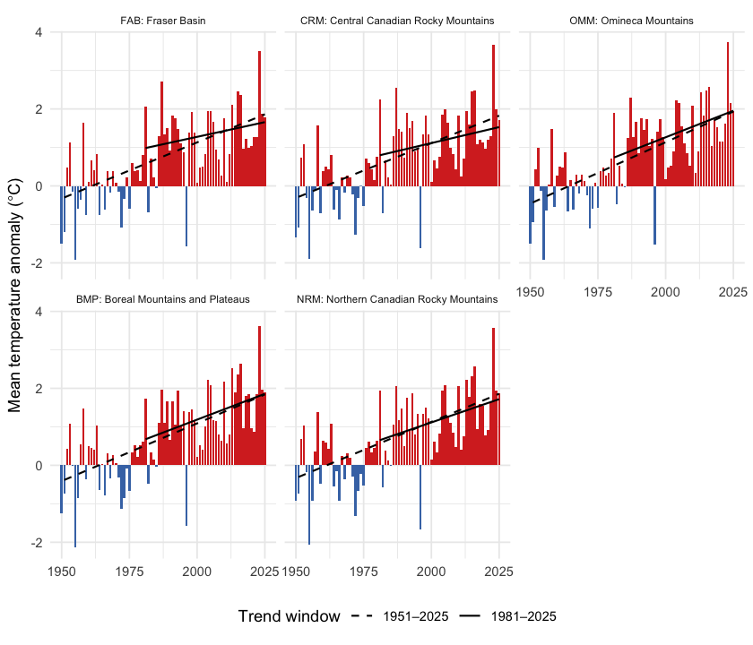
Figure 5.22: Annual mean temperature anomaly relative to the 1951-1980 baseline, by ecoregion. Dashed line is the 75-year Theil-Sen trend (1951-present); solid line is the 45-year trend (1981-present). A solid line steeper than the dashed line indicates accelerating warming.
ggplot(ano_all[ano_all$variable == "prcp" & ano_all$period == "annual", ],
aes(x = year, y = anomaly)) +
geom_col(aes(fill = anomaly >= 0), width = 0.85, show.legend = FALSE) +
geom_segment(data = trn_segs_prcp,
aes(x = x_start, xend = x_end, y = y_start, yend = y_end,
linetype = window),
inherit.aes = FALSE, color = "black", linewidth = 0.6) +
scale_fill_manual(values = c(`TRUE` = "#4575b4", `FALSE` = "#d73027")) +
scale_linetype_manual(values = c("dashed", "solid"), name = "Trend window") +
facet_wrap(~ ecoregion, ncol = 3,
labeller = labeller(ecoregion = er_labels)) +
labs(x = NULL, y = "Precipitation anomaly (% of baseline)") +
theme_minimal(base_size = 11) +
theme(legend.position = "bottom",
strip.text = element_text(size = 7))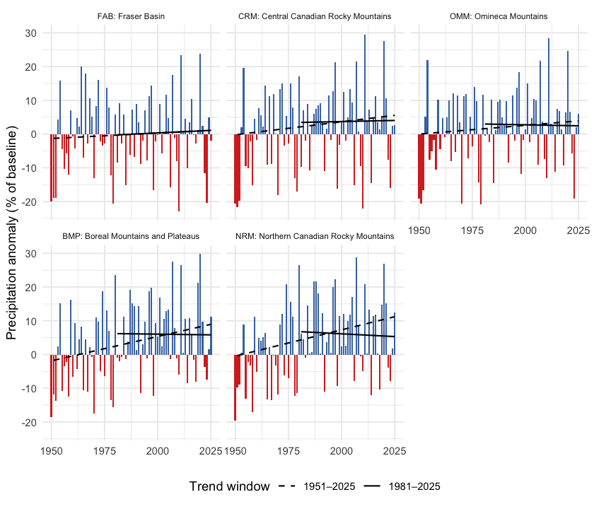
Figure 5.23: Annual precipitation anomaly (% of the 1951-1980 baseline) by ecoregion. The two northernmost ecoregions (BMP, NRM) show statistically significant precipitation increases over the full record; the others do not.
Snow by ecoregion
Two snow metrics are worth viewing per-ecoregion: peak snow water equivalent (annual snowpack magnitude) and DOY-50 (the day-of-year by which half the year’s snowmelt has already happened — earlier values mean an earlier freshet). Pair them with the Watershed Groups Across Ecoregions section below to read each watershed group’s dominant ecoregion signal.
ggplot(ano_all[ano_all$variable == "swe_max" & ano_all$period == "annual", ],
aes(x = year, y = anomaly)) +
geom_col(aes(fill = anomaly >= 0), width = 0.85, show.legend = FALSE) +
geom_segment(data = trn_segs_swe_max,
aes(x = x_start, xend = x_end, y = y_start, yend = y_end,
linetype = window),
inherit.aes = FALSE, color = "black", linewidth = 0.6) +
scale_fill_manual(values = c(`TRUE` = "#4575b4", `FALSE` = "#d73027")) +
scale_linetype_manual(values = c("dashed", "solid"), name = "Trend window") +
facet_wrap(~ ecoregion, ncol = 3,
labeller = labeller(ecoregion = er_labels)) +
labs(x = NULL, y = "Peak snow water equivalent anomaly (mm)") +
theme_minimal(base_size = 11) +
theme(legend.position = "bottom",
strip.text = element_text(size = 7))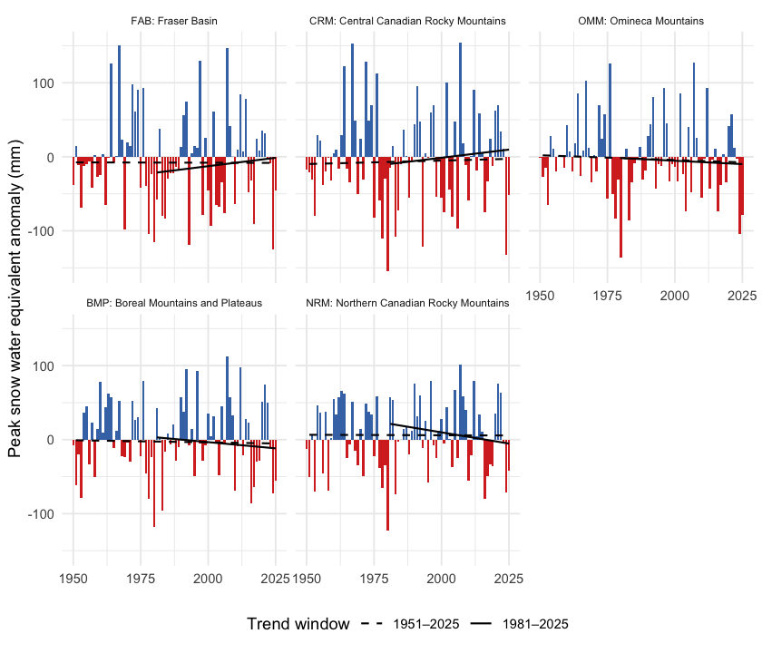
Figure 5.24: Annual peak snow water equivalent anomaly by ecoregion, relative to the 1951-1980 baseline. Bars are mm of water-equivalent snowpack departure from baseline.
ggplot(ano_all[ano_all$variable == "snowmelt_doy_50" & ano_all$period == "annual", ],
aes(x = year, y = anomaly)) +
geom_col(aes(fill = anomaly >= 0), width = 0.85, show.legend = FALSE) +
geom_segment(data = trn_segs_doy_50,
aes(x = x_start, xend = x_end, y = y_start, yend = y_end,
linetype = window),
inherit.aes = FALSE, color = "black", linewidth = 0.6) +
scale_fill_manual(values = c(`TRUE` = "#d73027", `FALSE` = "#4575b4")) +
scale_linetype_manual(values = c("dashed", "solid"), name = "Trend window") +
facet_wrap(~ ecoregion, ncol = 3,
labeller = labeller(ecoregion = er_labels)) +
labs(x = NULL, y = "DOY-50 anomaly (days; negative = earlier melt)") +
theme_minimal(base_size = 11) +
theme(legend.position = "bottom",
strip.text = element_text(size = 7))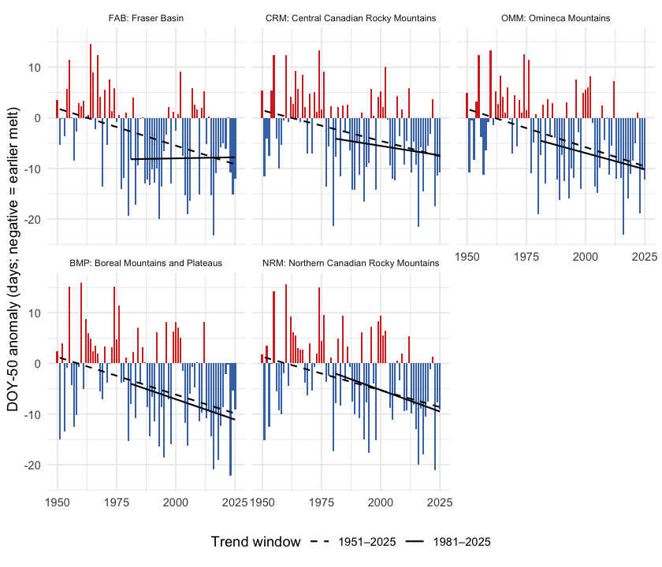
Figure 5.25: Snowmelt 50 % day-of-year (DOY-50) anomaly by ecoregion, relative to the 1951-1980 baseline. Negative values (red) mean the freshet midpoint shifted earlier in the year.
get_75 <- function(trn, var) {
trn[trn$variable == var & trn$period == "annual" & trn$trend_start == 1951, ]
}
rollup <- do.call(rbind, lapply(seq_along(results), function(i) {
res <- results[[i]]
cmp_i <- res$cmp
tmean <- get_75(res$trn, "tmean")
tmax <- get_75(res$trn, "tmax")
tmin <- get_75(res$trn, "tmin")
prcp <- get_75(res$trn, "prcp")
vpd <- get_75(res$trn, "vpd")
data.frame(
Ecoregion = ecoregions$code[i],
`tmean °C/dec` = round(10 * tmean$slope, 2),
`tmax °C/dec` = round(10 * tmax$slope, 2),
`tmin °C/dec` = round(10 * tmin$slope, 2),
`prcp mm/yr` = round(prcp$slope, 3),
`prcp p` = round(prcp$mk_pvalue, 3),
`vpd hPa/dec` = round(10 * vpd$slope, 3),
`vpd p` = round(vpd$mk_pvalue, 3),
`prcp % change` = round(
cmp_i$difference[cmp_i$variable == "prcp" & cmp_i$period == "annual"], 1),
`soil moisture % chg` = round(
cmp_i$difference[cmp_i$variable == "soil_moisture" & cmp_i$period == "annual"], 1),
check.names = FALSE
)
}))
knitr::kable(rollup, row.names = FALSE,
caption = "Per-ecoregion roll-up over the 75-year window (1951-present): annual mean / daytime maximum / overnight minimum temperature trends (°C per decade); annual precipitation trend (mm per year) and Mann-Kendall p-value; annual vapour pressure deficit trend (hPa per decade) and p-value; and recent (2015-2025) versus pre-warming (1951-1980) percent change for precipitation and soil moisture. All temperature p-values are below 0.001. A tmin slope greater than the tmax slope indicates the day-night asymmetry.")| Ecoregion | tmean °C/dec | tmax °C/dec | tmin °C/dec | prcp mm/yr | prcp p | vpd hPa/dec | vpd p | prcp % change | soil moisture % chg |
|---|---|---|---|---|---|---|---|---|---|
| FAB | 0.29 | 0.26 | 0.30 | 0.032 | 0.634 | 0.061 | 0.002 | 0.8 | -1.3 |
| CRM | 0.29 | 0.25 | 0.30 | 0.077 | 0.253 | 0.045 | 0.001 | 4.1 | -0.5 |
| OMM | 0.32 | 0.29 | 0.34 | 0.052 | 0.421 | 0.054 | 0.000 | 2.5 | -0.7 |
| BMP | 0.30 | 0.27 | 0.33 | 0.144 | 0.023 | 0.033 | 0.003 | 6.3 | 0.3 |
| NRM | 0.29 | 0.26 | 0.31 | 0.156 | 0.015 | 0.030 | 0.004 | 6.6 | 0.6 |
Ecoregion codes: FAB — Fraser Basin; CRM — Central Canadian Rocky Mountains; OMM — Omineca Mountains; BMP — Boreal Mountains and Plateaus; NRM — Northern Canadian Rocky Mountains.
Watershed groups across ecoregions
The FWCP Peace Region is reported and managed at the watershed- group scale — the British Columbia Freshwater Atlas hydrological reporting unit, and the unit the FWCP funds work in. Sixteen watershed groups make up the canonical FWCP Peace list. They span the five ecoregions in different ways: some sit entirely within one, others split across two or three (Figure 5.26). The table that follows gives, for each watershed group, the share of its area falling in each ecoregion — the cross-reference that maps the regional and ecoregion climate signals onto the per-watershed prioritisation unit.
wsg_centroids <- suppressWarnings(sf::st_centroid(wsgs))
ggplot() +
geom_sf(data = ecoregions, aes(fill = name_tc), color = "grey45",
linewidth = 0.3, alpha = 0.45) +
geom_sf(data = aoi, fill = NA, color = "#2166ac", linewidth = 0.8) +
geom_sf(data = wsgs, fill = NA, color = "grey25", linewidth = 0.4) +
ggrepel::geom_label_repel(
data = wsg_centroids,
aes(label = code, geometry = geom),
stat = "sf_coordinates",
size = 2.6, fill = "white", alpha = 0.85,
label.padding = unit(0.15, "lines"),
min.segment.length = 0
) +
scale_fill_brewer(palette = "Set3", name = "Ecoregion") +
guides(fill = guide_legend(nrow = 2, byrow = TRUE)) +
coord_sf(xlim = c(aoi_bb["xmin"] - 0.4, aoi_bb["xmax"] + 0.4),
ylim = c(aoi_bb["ymin"] - 0.5, aoi_bb["ymax"] + 0.3)) +
labs(title = "Watershed Groups on Ecoregion Backdrop") +
theme_minimal(base_size = 11) +
theme(axis.title = element_blank(),
legend.position = "bottom",
legend.text = element_text(size = 8),
legend.title = element_text(size = 9),
legend.key.size = unit(0.4, "cm"))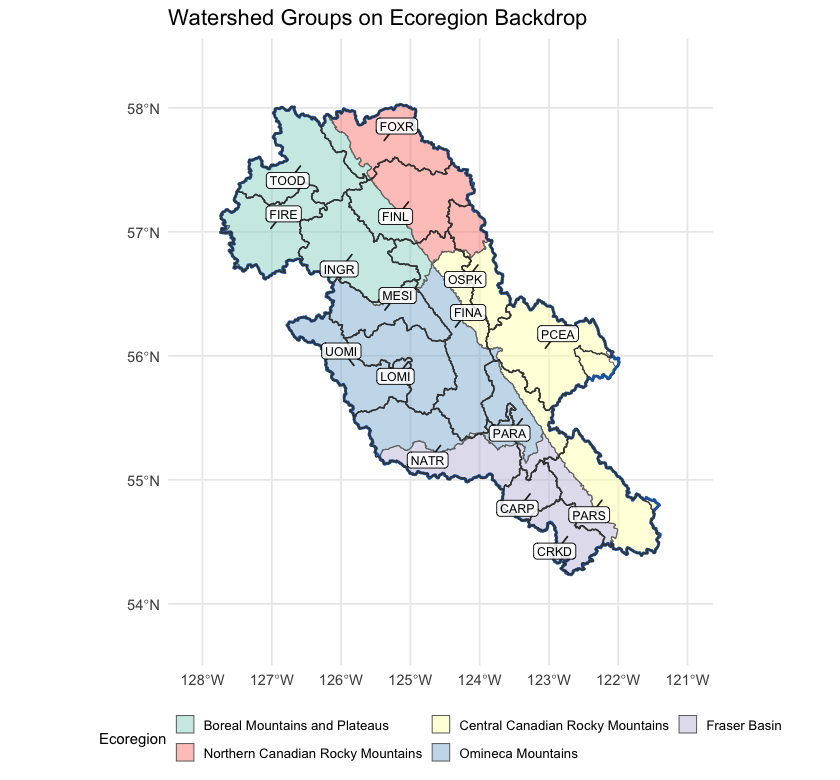
Figure 5.26: Watershed groups intersecting the FWCP Peace Region (full extent, including parts spilling outside the FWCP boundary), labelled with their codes, on top of ecoregion fills.
wsg_xref <- read.csv("data/gis/cd_peace_wsg_ecoregion.csv", check.names = FALSE)
wsg_xref$commentary <- NULL
names(wsg_xref) <- c("Code", "Name", "km² in FWCP",
"FAB %", "CRM %", "OMM %", "BMP %", "NRM %")
kableExtra::kable_styling(
knitr::kable(wsg_xref, label = NA, row.names = FALSE,
caption = "Watershed groups in the FWCP Peace Region with the percent of each group's area falling in each of the five ecoregions. Rows where one ecoregion is at or near 100 % indicate watershed groups contained within a single climate-physiography zone; rows split across two or more ecoregions indicate watershed groups whose climate departure can pull from more than one regional pattern."),
bootstrap_options = c("striped", "hover", "condensed")
) |>
kableExtra::scroll_box(height = "420px")| Code | Name | km² in FWCP | FAB % | CRM % | OMM % | BMP % | NRM % |
|---|---|---|---|---|---|---|---|
| CARP | Carp Lake | 1794 | 100.0 | 0.0 | 0.0 | 0.0 | 0.0 |
| CRKD | Crooked River | 2172 | 100.0 | 0.0 | 0.0 | 0.0 | 0.0 |
| FINA | Finlay Arm | 7383 | 0.3 | 20.2 | 61.8 | 10.3 | 7.4 |
| FINL | Finlay River | 5479 | 0.0 | 0.0 | 0.0 | 30.4 | 69.6 |
| FIRE | Firesteel River | 4376 | 0.0 | 0.0 | 1.0 | 99.0 | 0.0 |
| FOXR | Fox River | 4279 | 0.0 | 0.0 | 0.0 | 16.8 | 83.2 |
| INGR | Ingenika River | 5328 | 0.0 | 0.0 | 0.7 | 99.3 | 0.0 |
| LOMI | Lower Omineca River | 4013 | 0.0 | 0.0 | 100.0 | 0.0 | 0.0 |
| MESI | Mesilinka River | 3294 | 0.0 | 0.0 | 94.8 | 5.2 | 0.0 |
| NATR | Nation River | 6889 | 49.3 | 0.0 | 50.7 | 0.0 | 0.0 |
| OSPK | Ospika River | 2973 | 0.0 | 60.5 | 0.0 | 0.0 | 39.5 |
| PARA | Parsnip Arm | 3729 | 15.1 | 31.3 | 53.5 | 0.0 | 0.0 |
| PARS | Parsnip River | 5583 | 28.6 | 71.4 | 0.0 | 0.0 | 0.0 |
| PCEA | Peace Arm | 5861 | 0.0 | 98.8 | 1.2 | 0.0 | 0.0 |
| TOOD | Toodoggone River | 4849 | 0.0 | 0.0 | 0.0 | 100.0 | 0.0 |
| UOMI | Upper Omineca River | 3905 | 0.0 | 0.0 | 100.0 | 0.0 | 0.0 |
Interpretation for fish passage
Four findings tie the regional climate-departure analysis to per-watershed barrier prioritisation.
Warming is broad and uniform; the gradient is small. All five ecoregions warmed +1.7 to +1.9 °C since 1951 — temperature is not the variable that separates watershed groups within the Peace. What it does set is the regional context: every reach in the project area is operating in air ~1.8 °C warmer than the conditions the channel, floodplain, and fish community evolved under. The within-region thermal differentiation comes from elevation, aspect, riparian cover, and groundwater contribution — not from climate-departure magnitude.
Precipitation is increasing significantly only in the two northernmost ecoregions. Watershed groups dominated by Boreal Mountains and Plateaus (Toodoggone, Firesteel, Ingenika) or Northern Canadian Rocky Mountains (Finlay, Fox) sit on statistically defensible positive precipitation trends. The other eleven watershed groups sit in Fraser Basin, Central Canadian Rockies, or Omineca Mountains, where precipitation has not changed in a way distinguishable from natural variability. For barrier prioritisation in those eleven, the climate-driven hydrology story is dominated by atmospheric drying (rising VPD, flat soil moisture, snowpack timing) rather than precipitation magnitude.
The atmosphere is drying despite, in places, more precipitation. Vapour pressure deficit rose significantly in every ecoregion. Soil moisture is flat across the region even where precipitation rose — the warmer atmosphere is pulling the extra water back through evaporation and transpiration. The ecological implication is that streamflow during the summer low-flow period — the thermal-stress weeks where cold-water rearing habitat is at the margin — is not getting the relief that the precipitation increase, where it occurred, would otherwise suggest.
Snow is leaving the region earlier, not falling less. The snowpack-timing signal is regionally uniform — DOY-50 shifted earlier in every ecoregion. The freshet — the dominant high-flow event that mobilises spawning gravels, refills off-channel rearing habitat, and that crossing structures are sized against — is arriving weeks earlier across all 16 watershed groups. Summer snow water equivalent collapsed 75 %; the cold-water input that high-elevation snowpack provides to streams during the warmest weeks of summer is dropping in parallel. Both signals act on barrier prioritisation through hydrology and stream temperature rather than through which watershed they hit hardest.
For the cold-water resident salmonids the FWCP Peace supports — bull trout, Arctic grayling, mountain whitefish, rainbow trout, kokanee — the implication for barrier prioritisation is that two fundamentally different climate-departure stories play out across the 16 watershed groups, and that the priority weight on barrier removal should respond to both: warmer headwater reaches that gain growing-degree-days have more habitat to recover above the barrier, while reaches sitting closer to the upper thermal niche have less. The watershed-group ecoregion mapping in the table above is the bridge between the regional climate-departure summary in the main body of this report and the per-watershed weight applied to each barrier.